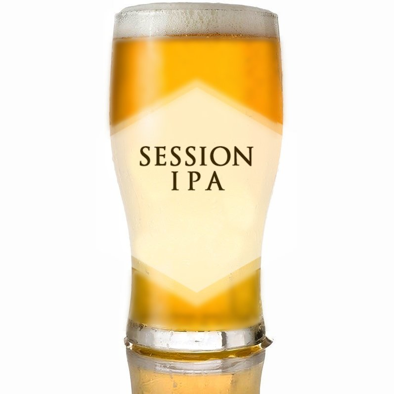
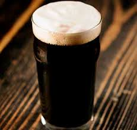
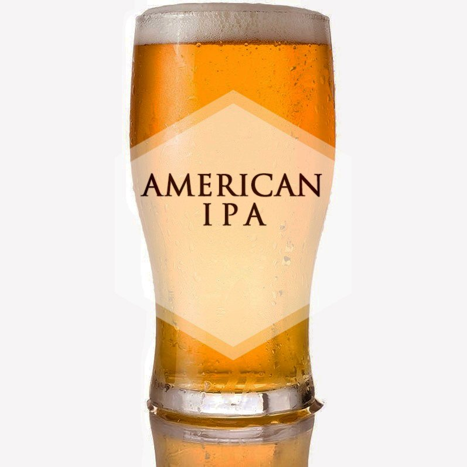
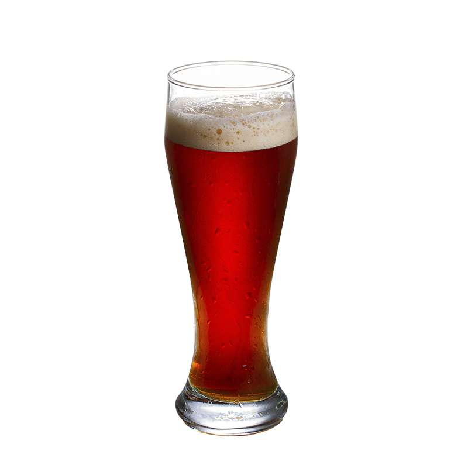

Nuestras Birras
Session IPA
> 
- Caracterizada por ser suave y refrescante, con notas cítricas. Ideal para el verano.
- IBU: 40 - 55
- Alcohol: 5%
Cream Stout
>
- Definida por un cuerpo pleno, cremosidad, espuma compacta y persistente color canela dada por la
gasificación con nitrógeno.
- IBU: 18
- Alcohol: 5,5%
American IPA

- Su aroma es intenso, cítrico, floral y afrutado; y posee notas de pino o resina.
- IBU: 40 - 70
- Alcohol: 5,5 % – 7,5%
Scottish Ale
> 
- Se caracteriza por un pronunciado carácter malteado, amargor leve y una terminación ligeramente dulce,
contenido alcohólico medio, buen cuerpo y excelente sabor.
- IBU: 10 - 20
- Alcohol: 4%